대기환경기사 (2008-09-07 기출문제)
1과목: 대기오염 개론
1. 냄새감도에 관한 설명 중 ( )안에 가장 알맞은 것은?
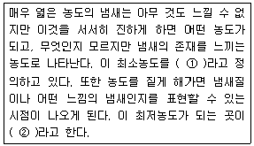
- ① 최소감지농도(Detection threshold), ② 최소포착농도(Capture threshold)
- ① 최소감지농도(Detection threshold), ② 최소인지농도(Recognition threshold)
- ① 최소인지농도(Recognition threshold), ② 최소포착농도(Capture threshold)
- ① 최소인지농도(Recognition threshold), ② 최소포착농도(Awareness threshold)
(정답률: 92%)

2. 다음은 태양상수에 관한 설명이다. ( )안에 가장 알맞은 것은?
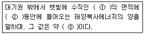
- ① 1cm2, ② 1분, ③ 약 2cal/cm2ㆍmin
- ① 1cm2, ② 1시간, ③ 약 2cal/cm2ㆍhr
- ① 1m2, ② 1분, ③ 약 2cal/cm2ㆍmin
- ① 1m2, ② 1시간, ③ 약 2cal/cm2ㆍhr
(정답률: 알수없음)
3. 다음 중 'Stokes 반경'의 정의로 가장 적합한 것은?
- 구형이 아닌 입자와 종속도는 같으나 밀도가 1g/cm3인 구형입자의 반경
- 구형이 아닌 입자와 종속도는 같으나 밀도가 10g/cm3인 구형입자의 반경
- 구형이 아닌 입자와 밀도는 같으나 종속도가 1cm/sec인 구형입자의 반경
- 구형이 아닌 입자와 종속도와 밀도를 가진 구형입자의 반경
(정답률: 62%)
4. 마찰증(Friction layer)과 관련한 바람에 관한 설명으로 거리가 먼 것은?
- 마찰층 내의 바람은 높이에 따라 항상 반시계방향으로 각천이(Angular shift)가 생긴다.
- 마찰층 내의 바람은 위로 올라갈수록 실제 풍향은 서서히 지균풍에 가까워진다.
- 마찰층 내의 바람은 위로 올라갈수록 그 변화량이 감소한다.
- 마찰층 이상 고도에서 바람의 고도변화는 근본적으로 기온분포에 의존한다.
(정답률: 알수없음)
5. 역선풍(Anticyclone)구역 내에서 차가운 공기가 장시간 침강(단열적)하였을 때 공기덩어리 상부면(Top)과 하부면(Bottom)의 온도차(변화)를 바르게 표시한 것은?(단, dT/dP는 압력에 대한 온도변화, 이상기체임)
- (dT/dP)TOP ＜ (dT/dP)BOTTOM
- (dT/dP)TOP ＞ (dT/dP)BOTTOM
- (dT/dP)TOP 〓 (dT/dP)BOTTOM
- (dT/dP)TOP ≤ (dT/dP)BOTTOM
(정답률: 알수없음)
6. A굴뚝의 유효고도는 40m 이다. 다른 조건이 같을 때 최대지표농도를 절반으로 감소시키려면 유효고도는 얼마가 되어야 하겠는가?
- 약 49m
- 약 57m
- 약 63m
- 약 66m
(정답률: 60%)
7. 가우시안(Gaussian) 분산모델에 있어서 수평 및 수직방향의 표준편차 δy와 δz에 관한 가정(설명)으로 가장 거리가 먼 것은?
- 대기의 안정상태와는 관계가 있지만, 연돌로부터의 풍하거리(Distance Downwind) 와는 무관하다.
- 고도에 따라 변하는 값으로 고도는 대기중에서 하부 수백 m에 국한하여 사용한다.
- 지표는 평탄하다고 간주한다.
- 시료채취시간은 약 10분으로 간주한다.
(정답률: 알수없음)
8. 다음 오염물질에 관한 설명으로 가장 적합한 것은?
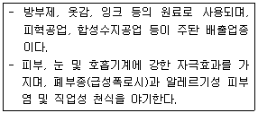
- 불화수소
- 질소산화물
- 염소
- 포름알데히드
(정답률: 알수없음)
9. 다음 입자상 오염물질에 대한 설명 중 가장 거리가 먼 것은?
- 훈연은 금속산화물과 같이 가스상물질이 승화, 증류 및 화학적 반응과정에서 응축될 때 주로 생성되는 고체입자이다.
- 조대입자(Coarse Particle)는 바람에 날린 토양 및 해염을 비롯하여 기계적 분쇄과정을 거쳐 주로 생성되는데, 자연적 발생원에 의한 것이 대부분이다.
- PM-10은 공기역학경을 기준으로 10㎛ 이하의 입자상 물질을 말하며, 호흡성 먼지량의 척도를 나타낸다고 할 수 있다.
- 입자상물질의 크기를 결정할 때 사용되는 마틴직경(Martin Diameter)은 입자상 물질의 그림자를 4개의 등면적으로 나눈 선의 길이를 직경으로 결정하며, 관찰방향에 상관없이 항상 동일한 값을 나타낸다.
(정답률: 60%)
10. 먼지농도를 측정하기 위해 여과지를 통해 공기의 속도를 0.3m/sec로 하여 1.5시간 동안 여과시킨 결과, 깨끗한 여과지에 비하여 사용된 여과지의 빛전달율이 80% 였다면, 1000m당 CoH는?
- 약 6.0
- 약 3.0
- 약 2.5
- 약 1.5
(정답률: 알수없음)
11. A굴뚝으로부터 배출되는 SO2가 풍하측 5000m 지점에서 지표 최고농도를 나타냈을 때, 유효굴뚝 높이는? (단, Sutton의 확산식을 사용하고, 수직확산계수는 0.07, 대기안정도 지수(n)는 0.25이다.)
- 약 120m
- 약 140m
- 약 160m
- 약 180m
(정답률: 40%)
12. 광화학 반응시 하루 중 NOx 변화에 대한 설명으로 가장 적합한 것은?
- NO2는 오존의 농도값이 적을 때 비례적으로 가장 적은 값을 나타낸다.
- NO2는 오전 7시 - 9시 경을 전후로 하여 일중 고농도를 나타낸다.
- 오전 중의 NO의 감소는 오존의 감소와 시간적으로 일치한다.
- 교통량이 많은 이른 아침시간대에 오존농도가 가장 높고, NOx는 오후 2 - 3시경이 가장 높다.
(정답률: 알수없음)
13. 오염된 대기에서의 SO2의 산화에 관한 다음 설명 중 가장 거리가 먼 것은?
- 연소과정에서 배출되는 SO2의 광분해는 상당히 효과적인데, 그 이유는 저공에 도달하는 것보다 더 긴 파장이 요구되기 때문이다.
- 낮은 농도의 올레핀계 탄화수소도 NO가 존재하면 SO2를 광산화시키는데 상당히 효과적일 수 있다.
- 파라핀계 탄화수소는 NOx와 SO2가 존재하여도 aerosol을 거의 형성시키지 않는다.
- 모든 SO2의 과화학은 일반적으로 전자적으로 여기된 상태의 SO2의 분자반응들만 포함한다.
(정답률: 28%)
14. 침강역전과 상대 비교시 복사역전에 관한 설명으로 거리가 먼 것은?
- 대기오염물질 배출원이 위치하는 대기층에서 주로 생성된다.
- 구름이 낀 날이나, 센 바람이 부는 날에는 잘 생기지 않는다.
- 지표 가까이에 형성되므로 지표역전이라고도 한다.
- 단기간보다는 장기간에 걸친 대기오염물질의 축적에 의한 문제를 주로 일으킨다.
(정답률: 알수없음)
15. 다음은 최대혼합고(MMD)에 관한 설명이다. ( )안에 가장 알맞은 것은?
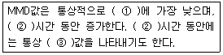
- ① 밤, ② 낮, ③ 20 - 30km
- ① 밤, ② 낮, ③ 2000 - 3000m
- ① 낮, ② 밤, ③ 20 - 30km
- ① 낮, ② 밤, ③ 2000 - 3000m
(정답률: 65%)
16. 산성비에 의한 토양의 영향에 대한 설명으로 틀린 것은?
- 산성강수가 가해지면 토양은 산적 성격이 강한 교환기부터 순서적으로 K+, Na+, Mg2+, Ca2+ 등의 교환성 염기를 흡수하고, 대신 H+를 방출한다.
- 교환성 Al은 산성의 토양에만 존재하는 물질이고, 교환성 H와 함께 토양 산성화의 주요한 요인이 된다.
- Al3+은 뿌리의 세포분열이나 Ca 또는 P의 흡수나 흐름을 저해한다.
- 토양의 양이온 교환기는 강산적 성격을 갖는 부분과 약산적 성격을 갖는 부분으로 나누는데, 결정성의 점토광물은 강산적이다.
(정답률: 30%)
17. 다음 중 대기분산모델에 관한 설명으로 가장 거리가 먼 것은?
- ISCST(Industrial Source Complex Model for Short Term)는 ISCLT와 같은 구조로서 주로 단기농도예측에 사용된다.
- ISCLT(Industrial Source Complex Model for Short Term)는 미국에서 널리 이용되는 범용적인 모델로 장기농도계산용의 모델이다.
- TCM(Texas Climatological Model)은 장기모델로 한국에서 많이 사용되었다.
- ADM(Air Distribution Model)은 기상관측에 사용되는 바람장모델로 일본에서 많이 사용되었다.
(정답률: 알수없음)
18. 다음 설명으로 가장 적합한 오염물질은?
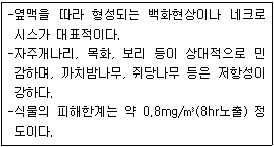
- 아황산가스
- 이산화질소
- 오존
- 일산화탄소
(정답률: 알수없음)
19. 연기의 형태에 관한 다음 설명 중 옳지 않은 것은?
- 지붕형: 하층에 비하여 상층이 안정한 대기상태를 유지할 때 발생한다.
- 환상형: 과단열감률 조건일 때, 즉 대기가 불안정할 때 발생한다.
- 원추형: 오염의 단면분포가 전형적인 가우시안분포를 이루며, 대기가 중립조건일 때 잘 발생한다.
- 부채형: 연기가 배출되는 상당한 고도까지도 강안정한 대기가 유지될 경우, 즉 기온역전현상을 보이는 경우 연직운동이 억제되어 발생한다.
(정답률: 40%)
20. 대기오염물질과 그 발생원의 연결로 가장 거리가 먼 것은?
- 시안화수소 - 청산제조업, 가스공업, 제철공업
- 페놀 - 타르공업, 도장공업
- 암모니아 - 소오다공업, 인쇄공장, 농약제조
- 아황산가스 - 용광로, 제련소, 석탄화력발전소
(정답률: 62%)
2과목: 연소공학
21. A(g) → 생성물 반응에서 그 반감기가 0.693/k 인 반응은? (단, k는 속도상수)
- 0차 반응
- 1차 반응
- 2차 반응
- n차 반응
(정답률: 알수없음)
22. 석유의 물리적 성질에 관한 다음 설명 중 옳지 않은 것은?
- 석유의 비중이 커지면 탄화수소비(C/H) 및 발열량이 커지고, 점도는 감소하여 인화점 및 착화점이 높아진다.
- 점도는 유체가 운동할 때 나타나는 마찰의 정도를 나타내고, 동점도는 절대점도를 유체의 밀도로 나눈 것이다.
- 석유의 증기압은 40℃에서의 압력(kg/cm2)으로 나타내며, 증기압이 큰 것은 인화점 및 착화점이 낮아서 위험하다.
- 인화점은 화기에 대한 위험도를 나타내며, 인화점이 낮을수록 연소는 잘되나 위험하다.
(정답률: 70%)
23. 다음 설명하는 오염물질 제거법으로 가장 적합한 것은?
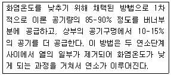
- SO2 제거를 위한 연소구역 냉각법
- 매연 제거를 위한 저과잉공기 연소법
- NOx 제거를 위한 연소구역 냉각법
- NOx 제거를 위한 2단 연소법
(정답률: 72%)
24. 아래와 같은 조건에서의 메탄의 이론연소온도는? (단, 메탄. 공기는 25℃에서 공급되는 것으로 하며, 메탄의 저위발열량은 8600kcal/Sm3, CO2, H2O, N2의 평균정압몰비열은 각각 13.1, 10.5, 8.0 kcal/kgmolㆍ℃로 한다.)
- 약 1985℃
- 약 2060℃
- 약 2160℃
- 약 2200℃
(정답률: 알수없음)
25. 화학반응속도론에 관한 다음 설명 중 가장 거리가 먼 것은?
- 화학반응식에서 반응속도상수는 반응물 농도와 관련된다.
- 화학반응속도는 반응물이 화학반응을 통하여 생성물을 형성할 때 단위시간당 반응물이나 생성물의 농도변화를 의미한다.
- 영차반응은 반응속도가 반응물의 농도에 영향을 받지 않는 반응을 말한다.
- 일련의 연쇄반응에서 반응속도가 가장 늦은 반응단계를 속도결정단계라 한다.
(정답률: 59%)
26. 정상연소에서 연소속도를 지배하는 요인으로 가장 적합한 것은?
- 연료 중의 불순물 함유량
- 연료 중의 고정탄소량
- 공기 중의 산소의 확산속도
- 배출가스 중의 N2 농도
(정답률: 알수없음)
27. 유류 버너의 종류에 관한 다음 설명 중 가장 거리가 먼 것은?
- 유압식버너에서 연료유의 분무각도는 압력, 점도 등으로 약간 달라지지만 40-90°정도이다.
- 회전식버너의 유량조절범위는 1:5 정도이고, 유압식버너에 비해 연료유의 분무화 입경은 비교적 크다.
- 고압공기식버너는 고점도 사용에도 적합하며, 분무각도가 20-30° 정도이며, 장염이나 연소시 소음이 발생된다.
- 저압공기식버너는 구조가 간단하고, 유량조절범위는 1:10 정도이며, 무화상태가 좋아서 대형가열로에 주로 사용한다.
(정답률: 알수없음)
28. 다음 가스 중 완전연소에 가장 많은 이론공기량이 요구되는 것은?(단, 가스는 순수가스임, Nm3/Nm3)
- 에탄
- 아세틸렌
- 메탄
- 에틸렌
(정답률: 78%)
29. 화격자 연소에 관한 다음 설명 중 가장 거리가 먼 것은?
- 상부투입식은 투입되는 연료와 공기의 방향이 향류로 교차되는 형태이다.
- 상부투입식 정상상태에서의 고정층은 상부로부터 석탄층, 건조층, 건류층, 환원층, 산화층, 회층으로 구성된다.
- 상부투입식 연소에는 화격자상에 고정층을 형성하지 않으면 안되므로 분상의 석탄은 그대로 사용하기에 곤란하다.
- 하부투입식에서는 저융점의 회분을 많이 포함한 연료의 연소에 적당하며, 착화성이 나쁜 연료도 유용하게 사용가능하다.
(정답률: 50%)
30. 프로판(C3H8) 2kg을 과잉공기계수 1.15로 완전 연소시킬 때 발생하는 습연소가스량(kg)은?
- 약 19kg
- 약 24kg
- 약 32kg
- 약 38kg
(정답률: 알수없음)
31. 용적비로 Propane과 Butane이 1 : 3 으로 혼합된 가스 1Sm3를 완전연소 할 경우 발생되는 CO2의 이론량(Sm3)은?
- 3.75Sm3
- 4.75Sm3
- 5.75Sm3
- 6.75Sm3
(정답률: 알수없음)
32. 다음 중 연소와 관련된 설명으로 가장 적합한 것은?
- 공연비는 예혼합연소에 있어서의 연료에 대한 공기의 질량비(또는 부피비)이다.
- 등가비가 1보다 큰 경우, 공기가 과잉인 경우로 열손실이 많아진다.
- 등가비와 공기비는 상호 비례관계가 있다.
- 최대탄산가스량(%)은 실제 건조연소가스량을 기준한 최대탄산가스의 용적백분율이다.
(정답률: 알수없음)
33. 기체연료 및 그 연소에 관한 설명 중 옳은 것은?
- 가스버너의 종류에는 저압버너, 고압버너, 송풍버너 등이 있다.
- LPG는 석유정제과정에서 주로 생기며 기화잠열이 20kcal/kg 정도로 작아 열손실이 작다.
- LPG는 상온상압하에서 액체이지만, 가압 및 냉각하면 쉽게 기화되므로 수송 및 저장이 간단하다.
- 코우크스 가스(석탄가스)는 코우크스를 용광로에 넣어 선철을 제조할 때 발생하는 기체연료로서 고위발열량은 900kcal/Sm3 정도이다.
(정답률: 50%)
34. 황함유량이 질량%로 1.4%인 중유를 매시 100톤 연소시킬 때 SO2의 배출량(Sm3/h)은? (단, 표준상태를 기준으로 하고, 황은 100% 반응하며, 이 중 5%는 SO3로 배출 나머지는 SO2로 배출된다.)
- 931Sm3/h
- 980Sm3/h
- 1015Sm3/h
- 1242Sm3/h
(정답률: 알수없음)
35. 석탄계 연료에 관한 다음 설명 중 가장 거리가 먼 것은?
- 석탄을 대기 중에 방치하면 점차로 환원되어 표면광택이 저하되고, 연료비가 증가한다.
- 석탄의 저장법이 나쁘면 완만하게 발생하는 열이 내부에 축적되어 온도상승에 의한 발화가 촉진될 수 있는데 이를 자연발화라 한다.
- 자연발화 가능성이 높은 갈탄ㅌ 및 아탄은 정기적으로 탄층 내부의 온도를 측정할 필요가 있다.
- 자연발화를 피하기 위해 저장은 건조한 곳을 택하고, 퇴적은 가능한 한 낮게 한다.
(정답률: 알수없음)
36. 다음 가연기체-공기혼합기체 중 최대(층류)연소속도가 가장 빠른 것은? (단, 대기압, 25℃ 기준)
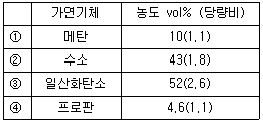
- ①
- ②
- ③
- ④
(정답률: 39%)
37. 다음 중 폭광유도거리가 짧아지는 요건으로 거리가 먼 것은?
- 정상의 연소속도가 작은 단일가스인 경우
- 관속에 방해물이 있거나 관내경이 작을수록
- 압력이 높을수록
- 점화원의 에너지가 강할수록
(정답률: 알수없음)
38. 현열에 관한 용어 설명으로 가장 적합한 것은?
- 물질에 의하여 흡수 또는 방출된 열이 물질의 상태변화에는 사용되지 않고 온도변화로만 나타나는 열
- 물질에 의하여 흡수 또는 방출된 열이 상태변화에만 사용되고 온도변화로는 나타나지 않는 열
- 물질에 의하여 흡수 또는 방출된 열이 물질의 모든 변화로 나타나는 열
- 물질에 의하여 흡수 또는 방출된 열이 물질의 상태변화 또는 온도변화에 사용되지 않고 계의 열용량에만 관계하는 열
(정답률: 알수없음)
39. 어떤 액체연료를 보일러에서 완전연소시켜 그 배출가스를 Orsat 분석 장치로서 분석하여 CO2 15%, O2 5%의 결과를 얻었다면 과잉공기계수는? (단, 일산화탄소 발생량은 없다.)
- 1.12
- 1.19
- 1.25
- 1.31
(정답률: 50%)
40. 가연성 가스의 폭발범위에 따른 위험도 증가 요인으로 가장 적합한 것은?
- 폭발하한농도가 높을수록 위험도가 증가하며, 폭발상한과 폭발하한의 차이가 작을수록 위험도가 커진다.
- 폭발하한농도가 높을수록 위험도가 증가하며, 폭발상한과 폭발하한의 차이가 클수록 위험도가 커진다.
- 폭발하한농도가 낮을수록 위험도가 증가하며, 폭발상한과 폭발하한의 차이가 작을수록 위험도가 커진다.
- 폭발하한농도가 낮을수록 위험도가 증가하며, 폭발상한과 폭발하한의 차이가 클수록 위험도가 커진다.
(정답률: 62%)
3과목: 대기오염 방지기술
41. 원심력 집진장치의 성능인자에 관한 설명으로 가장 거리가 먼 것은?
- 블로우 다운(Blow-down)효과를 적용하면 효율이 높아진다.
- 내경(배출내관)이 작을수록 입경이 작은 먼지를 제거할 수 있다.
- 한계(입구)유속내에서는 유속이 빠를수록 효율이 감소한다.
- 고농도는 병렬로 연결하고, 응집성이 강한 먼지는 직렬연결(단수 3단 한계)하여 주로 사용한다.
(정답률: 알수없음)
42. 환기장치의 요소로서 덕트 내의 동압에 대한 설명으로 옳은 것은?
- 속도압과 관계가 없다.
- 공기유속의 제곱에 반비례한다.
- 공기밀도에 비례한다.
- 액체의 높이로 표시할 수 없다.
(정답률: 47%)
43. A 배출시설의 배출가스 중 염소농도가 100mL/Sm3 이었다. 이 염소농도를 20mg/Sm3로 저하시키기 위해 제거해야 할 염소농도는?
- 79.2mL/Sm3
- 82.6mL/Sm3
- 93.7mL/Sm3
- 96.3mL/Sm3
(정답률: 알수없음)
44. 전기집진장치의 장애현상 중 2차 전류가 많이 흐를 때의 원인으로 틀린 것은?
- 먼지의 농도가 너무 낮을 때
- 공기 부하시험을 행할 때
- 방전극이 너무 가늘 때
- 이온 이동도가 적은 가스를 처리할 때
(정답률: 42%)
45. 사이클론의 종류에 관한 다음 설명 중 가장 거리가 먼 것은?
- 접선유입식 사이클론은 집진효율의 변화가 비교적 적은 편이다.
- 접선유입식 사이클론의 일반적인 입구 가스속도는 7-15m/s 정도이다.
- 축류식 사이클론은 반전형과 직선(직진)형으로 구분되며, 반전형은 입구 가스속도가 보통 25m/s 전후이다.
- 축류식 사이클론 중 반전형의 압력손실은 80-100mmH2O이며, 집진효율은 일반적으로 접선유입식과 큰 차이는 없는 편이다.
(정답률: 알수없음)
46. 냄새물질의 특성에 관한 설명 중 가장 거리가 먼 것은?
- 냄새분자를 구성하는 원소로는 C, H, O, N, S, Cl 등이다.
- 냄새물질로 분자량이 가장 적은 것은 암모니아 이며, 분자량이 큰 물질은 냄새강도가 분자량에 비례하여 강해지는 경향이 있다.
- 냄새물질은 화학반응성이 풍부하다.
- 화학물질이 냄새물질로 되기 위해서는 친유성기와 친수성기의 양기를 가져야한다.
(정답률: 40%)
47. CNG(Compressed Natural Gas)를 가솔린엔진에 적용했을 때에 관한 설명으로 거리가 먼 것은?
- CO, HC는 30-50%, CO2는 20-30% 이상 감소하는 것으로 알려져 있다.
- 가솔린엔진에 비해 출력이 20% 정도 증가(동일배기량 기준)하며, 1회 충전거리가 길다.
- 옥탄가가 130 정도로 높기 때문에 엔진압축비를 높일 수 있다.
- 엔진연소실과 연료공급계통에 퇴적물이 적어 윤활유나 엔진오일, 필터의 교환 주기가 연장된다.
(정답률: 46%)
48. 배출가스 중 염화수소의 농도가 300ppm 이다. 배출허용기준이 150mg/Sm3일 때, 최소한 몇 %를 제거해야 배출허용기준을 만족시킬 수 있는가? (단, 표준상태 기준이며, 기타 조건은 동일하다.)
- 약 31%
- 약 45%
- 약 55%
- 약 69%
(정답률: 알수없음)
49. 전기집진장치의 유지관리에 관한 사항 중 가장 거리가 먼 것은?
- 시동시에는 배출가스를 도입하기 최소 6시간 전에 애관용 히터를 가열하여 애자관 표면에 수분이나 먼지의 부착을 방지한다.
- 운전시에 2차 전류가 심하게 변하는 것은 전극간 거리(Pitch)의 불균일 또는 변형으로 국부적인 단락을 일으키기 때문인 경우가 많다.
- 운전시에 2차 전류가 매우 적을 때는 조습용 스프레이의 수량을 줄여 겉보기 전기저항을 높여야 한다.
- 정지시에는 접지저항을 년 1회 이상 점검하고, 10Ω 이하로 유지한다.
(정답률: 59%)
50. 염소가스를 함유하는 배출가스에 50kg의 수산화나트륨을 포한함 수용액을 순환 사용하여 100% 반응시킨다면 몇 kg의 염소가스를 처리할 수 있는가? (단, 표준상태 기준)
- 약 34kg
- 약 44kg
- 약 56kg
- 약 66kg
(정답률: 알수없음)
51. 다음 여과재의 재질 중 내산성 여과재로 적합하지 않은 것은?
- 목면
- 카네카론
- 비닐론
- 글라스화이버
(정답률: 알수없음)
52. 백필터의 먼지부하가 420g/m2에 달할 때 탈락시키고자 한다. 이 때 탈락시간 간격은? (단, 백필터 유입가스 함진농도는 10g/m3, 여과속도는 7200cm/hr 이다.)
- 25분
- 30분
- 35분
- 40분
(정답률: 알수없음)
53. A 전기집진장치의 집진면적비 A/Q가 20m2/(1000m3/h)일 때 집진효율은 90% 이었다. 이 전기집진장치의 집진면적비를 30m2/(1000m3/h)으로 할 때 예상되는 집진효율(%)은? (단, Deutsch - Anderson 식을 이용하여 계산하고, 기타조건의 변화는 없다고 가정한다.)
- 약 92%
- 약 94%
- 약 97%
- 약 99%
(정답률: 알수없음)
54. 휘발성유기화합물(VOCs)의 제거 기술로 가장 거리가 먼 것은?
- 직접소각
- 촉매환원법
- 활성탄흡착
- 생물여과법
(정답률: 30%)
55. 전기집진장치에서 먼지의 겉보기 전기저항을 낮추기 위해 주입하는 비저항 조절제로 거리가 먼 것은?
- 물 또는 수증기
- 소오다회(Soda lime)
- 암모니아 가스
- H2SO4
(정답률: 40%)
56. 질소산화물 배출제어에 관한 다음 설명 중 가장 거리가 먼 것은?
- 고온에서 고온 NO는 빠르게 형성되지만, 형성에 필요한 시간은 평형에 도달하지 못할 정도로 짧다.
- 프롬프트 NO는 온도와 촉매에 의해 강한 영향을 받는 수소 - 산소 연소에서 생성된다.
- 화염에서 대부분의 NOx는 일반적으로 NO 90%, NO2 10%, 정도이다.
- 연소가스 중의 NO는 환원제와 반응하여 N2로 재전환될 수 있으며, 일반적으로 내연기관엔진에서의 환원제는 CO 이고, 화력발전소에서는 NH3 이다.
(정답률: 알수없음)
57. 배연탈황법의 습식법과 건식법에 대한 상대비교 특성으로 가장 거리가 먼 것은?
- 습식법은 연돌에서의 확산이 나쁘다.
- 건식법은 장치의 규모는 작으나, 배출가스와 온도저하가 큰 편이다.
- 습식법의 경우 반응 효율은 높으나,. 수질오염의 문제가 있다.
- 건식법에서는 석회석주입법, 활성탄흡착법, 산화법 등이 있다.
(정답률: 알수없음)
58. 다음 설명하는 세정집진장치로 가장 적합한 것은?
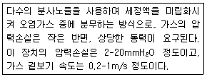
- 복원중 (정확한 보기내용을 아시는분께서는 오류 신고를 통하여 보기 내용 작성 부탁드립니다.)
- 복원중 (정확한 보기내용을 아시는분께서는 오류 신고를 통하여 보기 내용 작성 부탁드립니다.)
- 복원중 (정확한 보기내용을 아시는분께서는 오류 신고를 통하여 보기 내용 작성 부탁드립니다.)
- 복원중 (정확한 보기내용을 아시는분께서는 오류 신고를 통하여 보기 내용 작성 부탁드립니다.)
(정답률: 알수없음)
59. 중력침강실을 사용하여 먼지를 제거하려 할 때, 침강실의 길이 및 높이를 각각 L 및 H, 배출가스의 수평유속이 V 인 경우 100% 제거되는 입자의 최소 직경을 식으로 올바르게 표현한 것은? (단, 가스의 점도 μ, 중력가속도 g, 입자밀도 ρs, 입경은 50㎛ 보다 작으며, Stoke 법칙을 만족한다.)
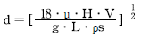
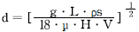
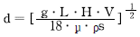
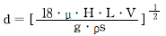
(정답률: 30%)
60. 스프레이 도장, 용접, 도금, 저속 컨베이어의 운반 등 약간의 공기 움직임이 있고 낮은 속도로 배출되는 작업조건에서의 제어속도 범위로 가장 적합한 것은?
- 0.15 - 0.5m/sec
- 0.5 - 1.0m/sec
- 1.0 - 5.0m/sec
- 5.0 - 10.0m/sec
(정답률: 알수없음)
4과목: 대기오염 공정시험기준(방법)
61. 가스크로마토그래프법의 장치구성에 관한 설명으로 가장 거리가 먼 것은?
- 분리관오븐(Column Oven)의 온도조절 정밀도는 ±0.5℃의 범위이내 전원 전압변동 10%에 대하여 온도변화 ±0.5℃ 범위이내(오븐의 온도가 150℃ 부근일 때)이어야 한다.
- 검출기 오븐은 검출기를 여러개 수용할 수 있고 분리관오븐과 동일하거나 그 이상의 온도를 유지할 수 있는 가열기구, 온도조절기구 및 온도측정기구를 갖추어야 한다.
- 일반적으로 TCD에서 운반가스는 순도 99.8% 이상의 질소나 아르곤을 사용한다.
- 일반적으로 FID에서 운반가스는 순도 99.8% 이상의 질소 또는 헬륨을 사용한다.
(정답률: 알수없음)
62. 비중이 1.88, 농도 97%(중량 %)인 농황산(H2SO4)의 규정 농도(N)는?
- 18.6N
- 24.9N
- 37.2N
- 49.7N
(정답률: 73%)
63. 채취관, 도관의 재질을 보통강철로 사용할 수 있는 분석대상가스로 가장 적합한 것은?
- 질소산화물, 시안화수소
- 비소, 페놀
- 암모니아, 일산화탄소
- 포름알데히드, 브롬
(정답률: 알수없음)
64. 대기 중에 부유하고 있는 입자상물질 시료채취 방법인 하이볼륨 에어샘플러법에 대한 설명으로 틀린 것은?
- 포집입자의 입경은 일반적으로 0.1 - 100㎛ 범위이다.
- 공기흡인부는 무부하일 때의 흡인유량은 보통 0.5m3/hr 범위 정도로 한다.
- 공기흡인부, 여과지홀더, 유량측정부 및 보호상자로 구성된다.
- 포집용 여과지는 보통 0.3㎛ 되는 입자를 99% 이상 포집할 수 있는 것을 사용한다.
(정답률: 40%)
65. 굴뚝 배출가스 내의 산소 측정방법 중 오르자트 분석장치로 산소를 측정할 때 사용되는 산소 흡수액은?
- 수산화칼슘용액 + 피리딘용액
- 수산화칼륨용액 + 피로갈롤용액
- 오르토톨리딘용액 + 피리딘용액
- 아연아민용액 + 피로갈롤용액
(정답률: 40%)
66. 굴뚝 배출가스 중의 시안화수소 분석을 위해 KCN 약 2.5g을 물에 녹여 1L로 한 후, 표정할 때, 이 용액 100mL를 정확히 취하여 사용되는 적정액( ① )과 종말점의 색깔변화( ② )는?
- ① N/10 AgNO3 용액 , ② 황색 → 적색
- ① N/10 AgNO3 용액 , ② 황색 → 적색
- ① N/10 NaOH 용액 , ② 황색 → 적색
- ① N/10 NaOH 용액 , ② 황색 → 적색
(정답률: 28%)
67. 다음은 굴뚝배출가스 중 아연환원 나프틸에틸렌디아민법에 의한 질소산화물 분석방법이다. ( )안에 알맞은 것은?
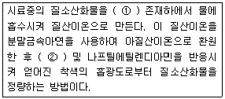
- ① 초산나트륨 , ② 술포닐 아미드
- ① 오존 , ② 술포닐 아미드
- ① 초산나트륨 , ② 페놀디술폰산
- ① 오존 , ② 페놀디술폰산
(정답률: 알수없음)
68. 굴뚝 배출가스 중의 카드뮴 화합물을 분석하기 위하여 시료를 채취하려고 한다. 시료 채취시 굴뚝 배출가스 온도에 따른 사용 여과지와의 연결로 거리가 먼 것은?
- 120℃ 이하 - 셀룰로스 섬유제 여과지
- 250℃ 이하 - 헤미셀룰로스 섬유제 여과지
- 500℃ 이하 - 유리 섬유제 여과지
- 1000℃ 이하 - 석영 섬유제 여과지
(정답률: 알수없음)
69. 다음은 배출가스 중 먼지 측정을 위한 측정공에 관한 사항이다. ( )안에 가장 적합한 것은?
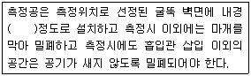
- 25 - 30 mm
- 510 - 75 mm
- 100 - 150 mm
- 200 - 250 mm
(정답률: 42%)
70. 흡광광도법(자외선 가시선 분광법)에는 일반적으로 램버어트-비어(Lambert - Beer)의 법칙을 이용한다. 이 법칙을 적용할 경우 다음 중 올바른 관계식은? (단, Io : 입사광의 강도, C : 농도, ε : 흡광계수, It : 투사광의 강도, L : 빛의 투사거리)
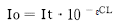
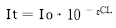
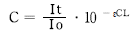
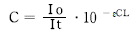
(정답률: 55%)
71. 흡광차분광법(DOAS)으로 측정 시 필요한 광원으로 옳은 것은?
- 1800 - 2850nm 파장을 갖는 Zeus 램프
- 200 - 900nm 파장을 갖는 Zeus 램프
- 180 - 2850nm 파장을 갖는 Xenon 램프
- 200 - 900nm 파장을 갖는 Hollow Cathode 램프
(정답률: 알수없음)
72. 다음은 굴뚝 배기가스 중 베릴륨 분석방법에 관한 설명이다. ( )안에 알맞은 것은?
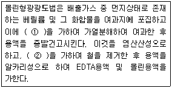
- ① 황산 , ② 4 - 메틸 - 2 - 펜타논
- ① 황산 , ② 디티존사염화탄소용액(0.0⑤W/V%)
- ① 질산 , ② 4 - 메틸 - 2 - 펜타논
- ① 초산나트륨 , ② 디티존사염화탄소용액(0.0⑤W/V%)
(정답률: 20%)
73. 액의 농도에 관한 설명으로 틀린 것은?
- 액의 농도를 (1→5)로 표시한 것은 그 용질의 성분이 고체일 때는 1g을 용매에 녹여 전량을 5mL로 하는 비율을 말한다.
- 황산(1 : 7)은 용질이 액체일 때 1mL를 용매에 녹여 전량을 7mL로 하는 것을 뜻한다.
- 혼액(1+2)은 액체상의 성분을 각각 1용량 대 2용량의 비율로 혼합한 것을 뜻한다.
- 단순히 용액이라 기재하고 그 용액의 이름을 밝히지 않은 것은 수용액을 뜻한다.
(정답률: 55%)
74. 폐기물 소각로에서 배출되는 다이옥신류의 최종배출구에서 시료채취시 흡인가스량으로 가장 적합한 것은? (단, 기타 사항은 고려하지 않는다.)
- 4시간 평균 3Nm3 이상
- 2시간 평균 1Nm3 이상
- 2시간 평균 0.5Nm3 이상
- 4시간 평균 2Nm3 이상
(정답률: 알수없음)
75. 가스크로마토그래프법의 정성분석에 관한 설명으로 거리가 먼 것은?
- 동일 조건하에서 특정한 미지성분의 머무른 값(보유치)과 예측되는 물질의 피이크의 머무른 값을 비교한다.
- 보유치의 표시는 무효부피(Dead Volume)의 보정유무를 기록하여야 한다.
- 보통 5-30분 정도에서 측정하는 피이크의 보유시간은 반복시험을 할 때 ±5% 오차범위 이내이어야 한다.
- 보유시간을 측정할 때는 3회 측정하여 그 평균치를 구한다.
(정답률: 55%)
76. 기체 - 고체 크로마토그래프법에서 사용하는 흡착형 충전물이 아닌 것은?
- 알루미나
- 활성탄
- 담체
- 실리카겔
(정답률: 알수없음)
77. 배출가스 중의 황산화물 분석방법 중 반응이 이소프로필알코올 용액 중에서 이루어지는 방법은?
- 중화적정법
- 아르세나조 Ⅲ법
- 오르토 톨리딘법
- 티오시안산제이수은법
(정답률: 20%)
78. 환경대기중 옥시단트(오존으로서) 측정방법 중 화학발광법(자동연속측정법)에 관한 설명으로 거리가 먼 것은?
- 이 측정방법의 최저감지농도는 0.003ppm이며 방해물질로는 수분에 대해 약간 영향을 받으나 다른 물질에 대하여는 영향을 거의 받지 않는다.
- 시료대기중에 오존과 아세틸렌(Acethylene)가스가 반응할 때 생기는 발광도가 오존농도와 비례관계가 있다는 것을 이용하여 오존농도를 측정한다.
- 여과지는 시료대기중에 포함되어 있는 먼지 제거와 유로 막힘 방지를 위해 사용하며, 테플론을 사용하여 오존 흡착을 방지하여 측정오차의 발생을 줄여야 한다.
- 제로가스는 고압용기에 넣은 고순도 공기 또는 활성탄이나 소다회 등을 통과시켜 불순물을 제거시킨 공기를 사용한다.
(정답률: 알수없음)
79. 흡광광도법(자외선 가시선 분광법)에서 사용되는 분석대상가스별 흡수액과의 연결로 거리가 먼 것은?
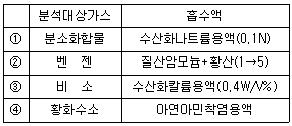
- ①
- ②
- ③
- ④
(정답률: 알수없음)
80. A 굴뚝 배출가스의 유속을 피토관으로 측정하였다. 배출가스 온도는 120℃, 동압 측정시 확대율이 10배 되는 경사마노미터를 사용하였고, 그 내부액은 비중이 0.85의 톨루엔을 사용하여 경사마노미터의 액주로 측정한 동압은 45mmㆍ톨루엔주 이었다. 이때의 배출가스 유속은? (단, 피토관의 계수: 0.9594, 배출가스의 표준상태에서의 밀도: 1.3kg/Sm3)
- 약 7.8m/s
- 약 8.7m/s
- 약 9.5m/s
- 약 10.2m/s
(정답률: 알수없음)
5과목: 대기환경관계법규
81. 다중이용시설 등의 실내공기질 관리법규상 보육시설 내부의 쾌적한 공기질을 유지하기 위한 실내공기질 유지기준이 설정된 오염물질이 아닌 것은?
- PM10
- HCHO
- TVOCs
- 총부유세균
(정답률: 50%)
82. 대기환경보전법규상 대기환경규제지역을 관할하는 시ㆍ도지사가 그 지역의 환경기준을 달성ㆍ유지하기 위해 수립하는 실천계획에 포함되어야 할 사항과 가장 거리가 먼 것은? (단, 그 밖에 환경부장관이 정하는 사항은 제외한다.)
- 대기오염예측모형을 이용한 특정대기오염물질 배출량조사
- 대기오염원별 대기오염물질 저감계획 및 계획의 시행을 위한 수단
- 일반환경현황
- 대기보전을 위한 투자계획과 대기오염물질 저감효과를 고려한 경제성 평가
(정답률: 46%)
83. 대기환경보전법규상 배출시설의 변경신고를 하여야 하는 경우로 거리가 먼 것은?
- 방지시설을 같은 규모의 시설로 대체하는 경우
- 종전의 연료보다 황함유량이 낮은 연료로 변경하는 경우
- 사업장의 명칭이나 대표자를 변경하는 경우
- 방지시설을 임대하는 경우
(정답률: 54%)
84. 대기환경보전법상 공익에 현저한 지장을 줄 우려가 있다고 인정되는 경우 등으로 조업정치처분을 갈음하여 행할 수 있는 과징금 처분사항으로 가장 거리가 먼 것은?
- 과징금을 부과하는 위반행위의 종류ㆍ정도 등에 따른 과징금의 금액과 그 밖에 필요한 사항은 환경부령으로 정한다.
- 환경부장관은 과징금을 내야 할 자가 납부기한까지 내지 아니하면 국세청장으로 하여금 직접 징수하도록 하여야 한다.
- 규정에 따라 징수한 과징금은 환경개선특별회계의 세입으로 한다.
- 조업정지처분을 갈음하여 부과할 수 있는 과징금의 최대액수는 2억원 이다.
(정답률: 알수없음)
85. 다중이용시설 등의 실내공기질 관리법규상 “산후조리원”의 실내공기질 권고기준으로 틀린 것은?
- Rn (pCi/L) : 5.0 이하
- NO2 (ppm) : 0.⑤ 이하
- 석면 (To/cc) : 0.01 이하
- 오존 (ppm) : 0.06 이하
(정답률: 알수없음)
86. 대기환경보전법령상 기본부과금 산정기준 중 “공업지역”의 지역별 부과계수는? (단, 지역구분은 국토의 계획 및 이용에 관한 법률에 의한다.)
- 0.5
- 1.0
- 1.5
- 2.0
(정답률: 알수없음)
87. 대기환경보전법규상 배출가스 보증기간에 관한 사항으로 거리가 먼 것은? (단, 2006년 1월 1일 이후 2008년 12월 31일까지의 제작자동차 기준)
- 휘발유와 가스를 병용하는 자동차는 휘발유자동차의 보증기간을 적용한다.
- 경유를 사용하는 소형 승용자동차의 경우 배출가스 보증기간의 적용은 5년 또는 80,000km 이다.
- 보증기간은 자동차 소유자가 자동차를 구입한 일자를 기준으로 한다.
- 휘발유를 사용하는 경자동차의 경우 배출가스 보증기간의 적용은 5년 또는 80,000km 이다.
(정답률: 73%)
88. 악취방지법규상 악취검사기관의 시설 및 장비가 부족하거나 고장난 상태로 7일 이상 방치한 경우로서 규정에 의한 악취검사기관의 지정기준에 미달한 경우 2차 행정처분기준으로 가장 적합한 것은?
- 지정취소
- 업무정지15일
- 업무정지 1월
- 업무정지 3월
(정답률: 알수없음)
89. 대기환경보전법규상 자동차의 종류에 관한 내용으로 틀린 것은? (단, 자동차의 종류는 2006년 1월 1일 이후 적용기준)
- 엔진배기량이 800CC 이상이고, 차량 총중량이 3.5톤 미만이며, 승차인원이 8명 이하로서 사람을 운송하기 적합하게 제작된 것은 소형승용 자동차에 해당한다.
- 차량 총중량이 3.5톤 이상 12톤 미만으로 화물을 운송하기 적합하게 제작된 것은 대형화물 자동차에 해당한다.
- 공차 중량이 0.5톤 이상 1.0톤 미만으로 1명 또는 2명 정도의 사람을 운송하기 적합하게 제작된 것은 이륜자동차에 해당한다.
- 원동기 정격출력이 19kW 이상 560kW 미만으로 건설공사에 사용하기 적합하게 제작된 것은 건설기계에 해당한다.
(정답률: 19%)
90. 대기환경보전법상 '첨가제'에 대한 용어 정의로 가장 적합한 것은? (단, 기타 요건은 모두 충족된 것으로 간주한다.)
- 탄소와 수소만으로 구성된 물질로서 자동차의 연료에 소량을 첨가함으로써 자동차의 성능을 향상시키거나 자동차 배출가스를 저감시키는 화학물질을 말한다.
- 자동차의 성능을 향상시키거나 배출가스를 줄이기 위하여 자동차의 연료에 참가하는 탄소와 수소만으로 구성된 물질을 제외한 화학물질을 말한다.
- 탄소와 수소만으로 구성된 자동차의 연료에 휘발성 연료물질 소량을 첨가함으로써 자동차의 선응을 향상시키거나 자동차 배출가스를 줄이기 위한 화학물질을 말한다.
- 탄소와 수소, 질소 및 소량의 황으로 구성된 물질로서 자동차의 연료에 소량을 첨가함으로써 자동차의 성능을 향상시키거나 자동차 배출가스를 줄이기 위한 화학물질을 말한다.
(정답률: 알수없음)
91. 다중이용시설 등의 실내공기질 관리법상 규정된 용어의 정의로 옳지 않은 것은?
- “공동주택”이라 함은 「건축법」 규정에 의한 공동주택을 말한다.
- “다중이용시설”이라 함은 불특정다수인이 이용하는 시설을 말한다.
- “공기정화설비”라 함은 오염된 실내공기를 밖으로 내보내고 신선한 바깥공기를 실내로 끌어들여 실내공간의 공기를 쾌적한 상태로 유지시키는 설비를 말한다.
- “오염물질”이라 함은 실내공간의 공기오염의 원인이 되는 가스와 떠다니는 입자상물질 등으로서 환경부령이 정하는 것을 말한다.
(정답률: 알수없음)
92. 다중이용시설 등의 실내공기질 관리법의 적용대상이 되는 다중이용시설 중 대통령령이 정하는 규모기준으로 틀린 것은?
- 항만시설 중 연면적 5천제곱미터 이상인 대합실
- 연면적 1천제곱미터 이상인 실내주차장(기계식 주차장을 포함한다.)
- 연면적 2천제곱미터 이상인 지하도상가(연속되어 있는 2 이상의 지하도상가의 연면적 합계가 2천제곱미터 이상인 경우를 포함한다.)
- 연면적 430제곱미터 이상인 국공립보육시설, 법인보육시설, 직장보육시설 및 민간보육시설
(정답률: 40%)
93. 대기환경보전법규상 시멘트수송의 경우 비산먼지 발생을 억제하기 위한 시설 및 필요한 조치기준으로 틀린 것은?
- 적재물이 적재함 상단으로부터 수평 5cm 이하까지만 적재함 측면에 닿도록 적재할 것
- 수송차량은 세륜 및 측면 살수 후 운행하도록 할 것
- 먼지가 흩날리지 아니하도록 공사장 안의 통행차량은 시속 40km 이하로 운행할 것
- 덮개를 설치하여 적재물이 외부에서 보이지 아니하고 흘림이 없도록 할 것
(정답률: 50%)
94. 대기환경보전법령상 초과부과금의 부과대상이 되는 오염물질이 아닌 것은?
- 이황화탄소
- 염화수소
- 이산화질소
- 시안화수소
(정답률: 알수없음)
95. 대기환경보전법상 환경부장관이 배출부과금을 부과할 때 고려하여야 할 사항으로 거리가 먼 것은? (단, 그 밖에 대기환경의 오염 또는 개선과 관련되는 사항으로서 환경부령으로 정하는 사항은 제외한다.)
- 배출허용기준 초과 여부
- 부과대상 사업장의 명칭
- 배출되는 오염물질의 종류
- 오염물질의 배출량 및 배출기간
(정답률: 알수없음)
96. 환경정책기본법령상 각 항목별 대기환경기준치 및 측정방법으로 틀린 것은? (단, 기준치는 1시간 평균치)
- CO : 25ppm 이하, Non - Dispersive Infrared Method
- NO2 : 0.1ppm 이하, Chemiluminescent Method
- O3 : 0.06ppm 이하, U.V Photometric Method
- SO2 : 0.15ppm 이하, Pulse U.V Fluorescence Method
(정답률: 알수없음)
97. 대기환경보전법령상 대기오염물질발생량의 합계가 연간25톤인 사업장에 해당하는 것은? (단, 기타사항 제외)
- 1종사업장
- 2종사업장
- 3종사업장
- 4종사업장
(정답률: 40%)
98. 대기환경보전법령상 인증을 면제할 수 있는 자동차에 해당되는 것은?
- 국가대표 선수용 자동차로서 문화체육관광부장관의 확인을 받은 자동차
- 항공기 지상 조업용 자동차
- 여행자 등이 다시 반출할 것을 조건으로 일시 반입하는 자동차
- 주한 외국군인의 가족이 사용하기 위하여 반입하는 자동차
(정답률: 알수없음)
99. 대기환경보전법규상 대기오염물질의 공동처리를 위해 공동방지시설을 설치하고자 하는 공동방지시설 운영기구의 대표자가 허가를 받기 위해 시ㆍ도지사에게 제출하여야 하는 서류에 해당하지 않는 것은?
- 공동 방지시설의 위치도(축적 2만 5천분의 1의 지형도)
- 사업장에서 공동 방지시설에 이르는 연결관의 설치도면 및 명세서
- 기술능력현황을 기재한 서류
- 공동 방지시설의 운영에 관한 규약
(정답률: 30%)
100. 대기환경보전법규상 그 배출시설이 발전소의 발전 설비로서 국민경제에 현저한 지장을 우려가 있어 조업정지처분을 갈음하여 과징금을 부과할 때 3종사업장인 경우 조업정지 1일당 과징금 부과금액 기준으로 옳은 것은?
- 900만원
- 600만원
- 450만원
- 300만원
(정답률: 60%)